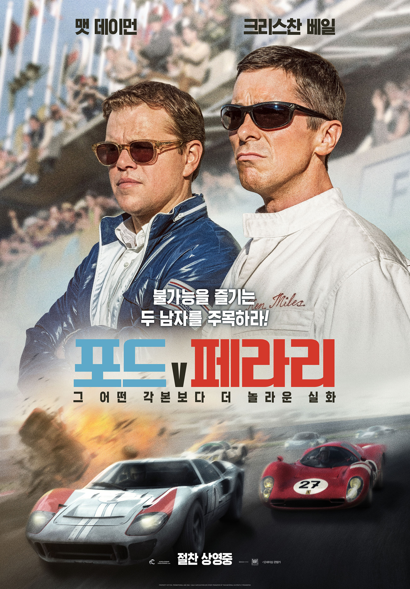

MOVIES
 추천영화
┃
추천영화
┃
 최신영화
최신영화
-
「천문: 하늘에 묻는다」
역사상 가장 위대한 왕 세종!
관노로 태어나 종3품 대호군이 된 천재 과학자 장영실!
20년간 꿈을 함께하며 위대한 업적을 이뤄낸 두 사람이었지만
임금이 타는 가마 안여(安與)가 부서지는 사건으로
세종은 장영실을 문책하며 하루아침에 궁 밖으로 내치고
그 이후 장영실은 자취를 감추는데...
조선의 시간과 하늘을 만들고자 했던 세종과 장영실!
그들의 숨겨진 이야기가 밝혀진다!
-
「시동」
인생 뭐 있어?
일단 한번 살아보는 거야!
학교도 싫고 집도 싫고 공부는 더더욱 싫다며
'엄마'(염정아)에게 1일 1강스파이크를 버는 반항아 '택일'(박정민).
절친 '상필'(정해인)이 빨리 돈을 벌고 싶다며 사회로 뛰어들 때,
무작정 집을 뛰쳐나간 '택일'은 우연히 찾은 장품반점에서
남다른 포스의 주방장 '거석이형'(마동석)을 만나게 된다.
강렬한 첫 인사를 나누자마자 인생 최대 적수가 된 '거석이형'과 '택일'.
세상 무서울 것 없던 '택일'은 장품반점에서 상상도 못한 이들을 만나
진짜 세상을 맛보게 되는데?
-
 「포드 Ⅴ 페라리」
자존심을 건 대결의 시작!
1960년대, 매출 감소에 빠진 ‘포드’는 판매 활로를 찾기 위해
스포츠카 레이스를 장악한 절대적 1위 ‘페라리’와의 인수 합병을 추진한다.
막대한 자금력에도 불구, 계약에 실패하고 엔초 페라리로부터 모욕까지 당한 헨리 포드 2세는
르망 24시간 레이스에서 페라리를 박살 낼 차를 만들 것을 지시한다.
불가능을 즐기는 두 남자를 주목하라!
세계 3대 자동차 레이싱 대회이자 ‘지옥의 레이스’로 불리는 르망 24시간 레이스.
출전 경험조차 없는 ‘포드’는 대회 6연패를 차지한 ‘페라리’에 대항하기 위해
르망 레이스 우승자 출신 자동차 디자이너 ‘캐롤 셸비’(맷 데이먼)를 고용하고,
그는 누구와도 타협하지 않지만 열정과 실력만큼은 최고인 레이서
‘켄 마일스’(크리스찬 베일)를 자신의 파트너로 영입한다.
포드의 경영진은 제 멋대로인 ‘켄 마일스’를 눈엣가시처럼 여기며
자신들의 입맛에 맞춘 레이스를 펼치기를 강요하지만
두 사람은 어떤 간섭에도 굴하지 않고 불가능을 뛰어넘기 위한 질주를 시작하는데…
그 어떤 각본보다 놀라운 실화가 펼쳐진다!